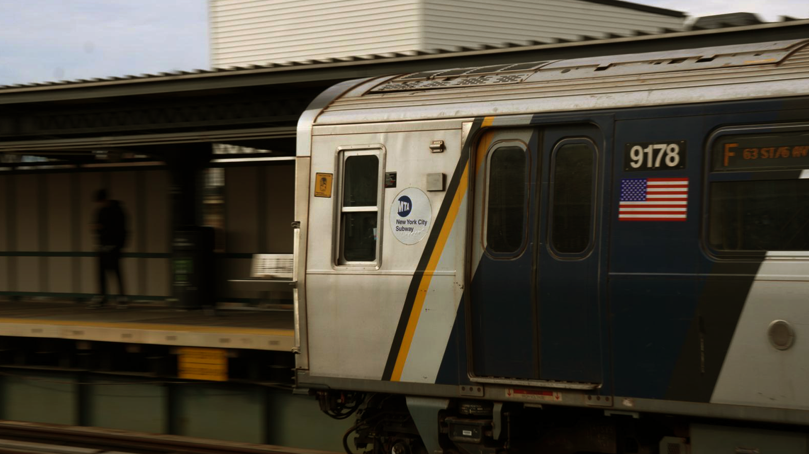

Movement and Stillness in Urban Life

This photograph presents a subway train in motion, capturing the fast-paced, routine nature of urban life. In the editing process, I increased the contrast and slightly lowered the saturation to produce a more restrained and realistic tone, reinforcing the industrial character of the setting. The off-center composition allows the train to appear as if it is moving beyond the frame, while the subtle blur in the background enhances the sense of motion. Together, these choices emphasize not only the physical movement of the train but also the repetitive, almost mechanical rhythm of daily commuting.
Ordered Movement

This image focuses on a street intersection, using signage and street markings to represent structure and control within an urban environment. In editing, I enhanced the contrast and slightly warmed the tones to make the yellow traffic signals stand out against the muted grays of the pavement. The composition is vertically centered on the pole, allowing the intersecting street signs and directional arrows to guide the viewer’s eye throughout the frame. The repetition of lines in the crosswalk and road markings reinforces a sense of order and regulation. Overall, these choices emphasize how movement in the city is not random, but carefully directed and controlled.